Chapter 15: Coltrane Changes
Back to Top
"Giant Steps" Changes
Figure 15-1
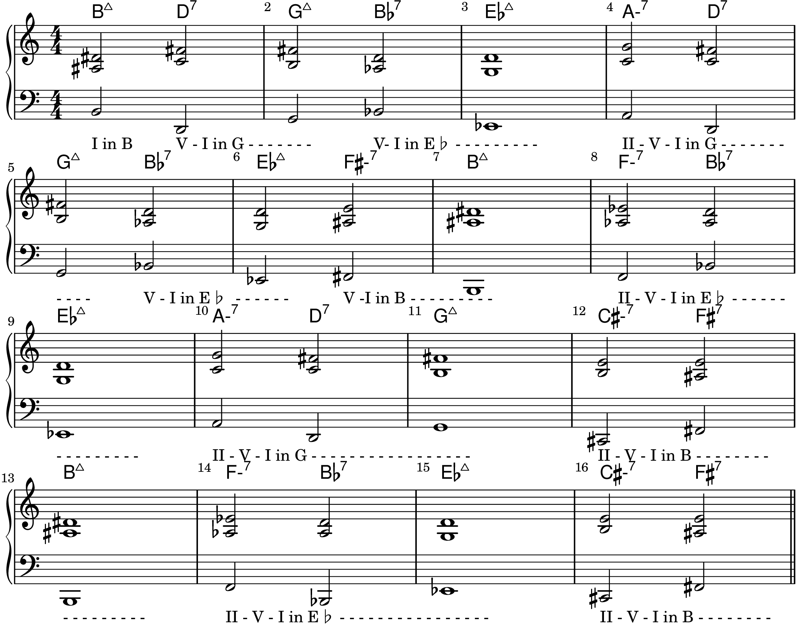
Figure 15-2
Figure 15-3
A History Lesson
Figure 15-4
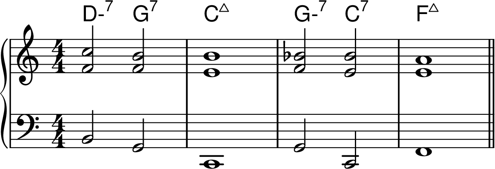
Figure 15-5
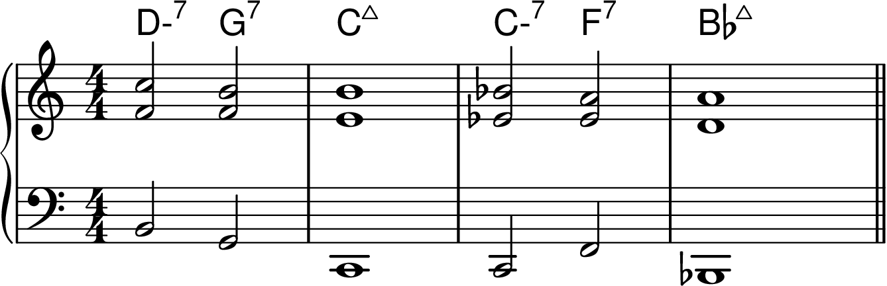
Figure 15-6
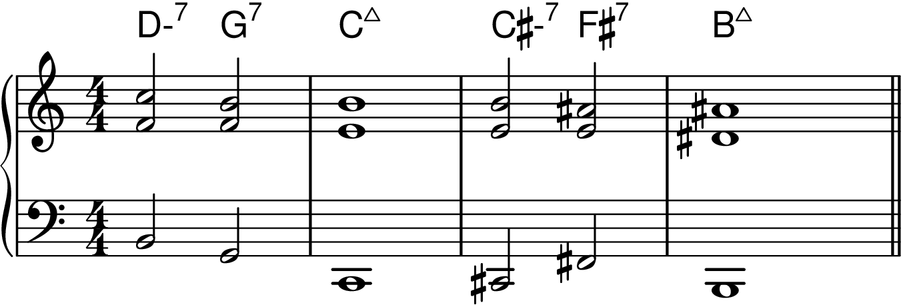
Figure 15-7
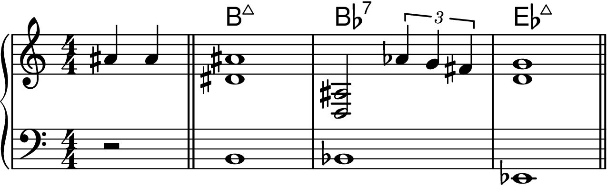
Figure 15-8
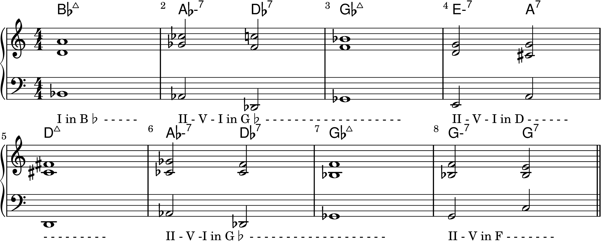
Figure 15-9
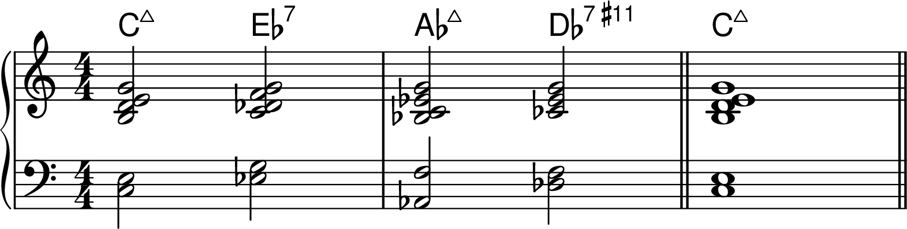
Figure 15-10

Figure 15-11
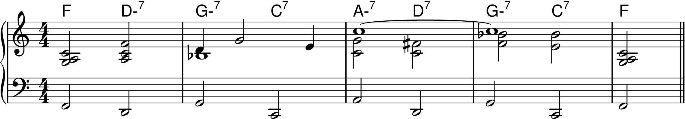
Figure 15-12
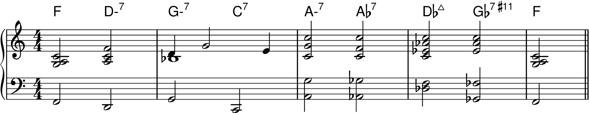
Figure 15-13
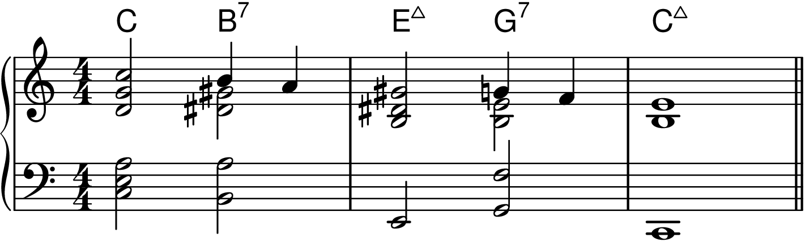
Figure 15-14
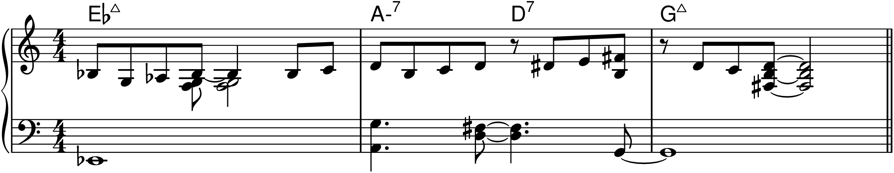
Figure 15-15
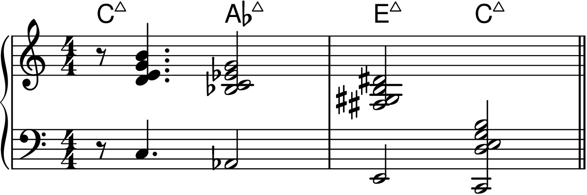
"Countdown" and "Tune Up"
Figure 15-16
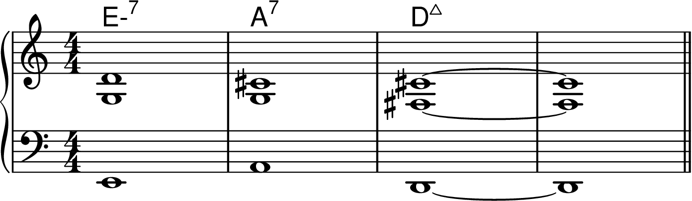
Figure 15-17
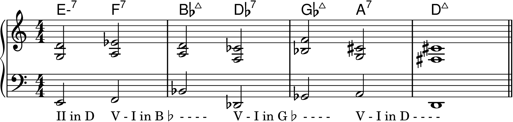
Coltrane Changes Played on Standards
Figure 15-19
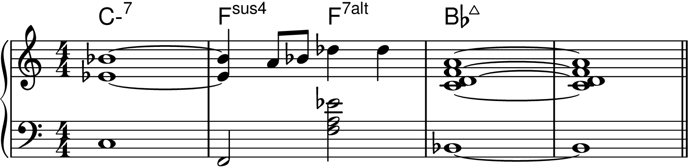
Figure 15-20
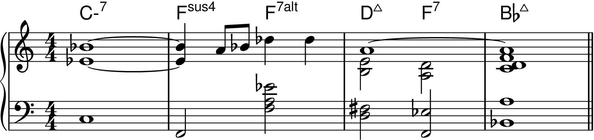
Figure 15-21
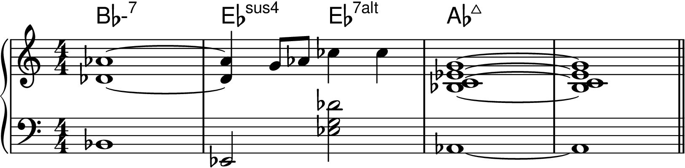
Figure 15-22
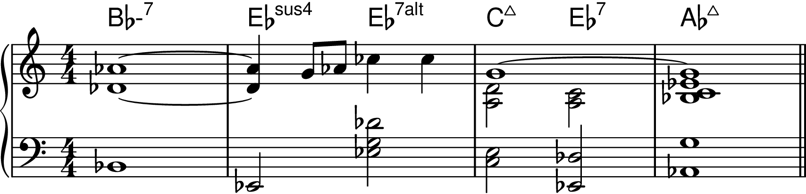
Figure 15-23
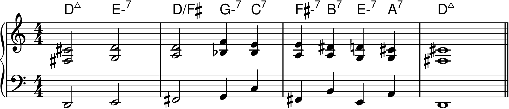
Figure 15-24
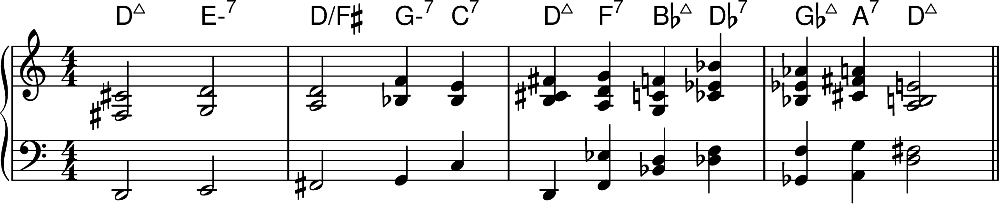
Figure 15-25
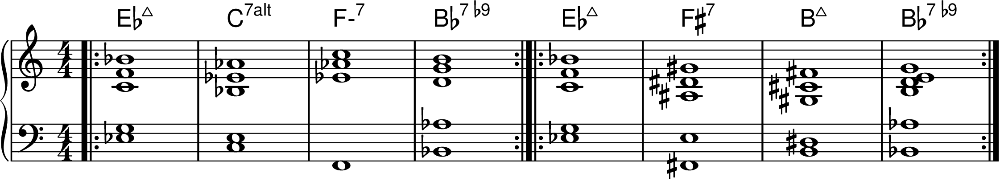
Practicing Coltrane Changes
Figure 15-26
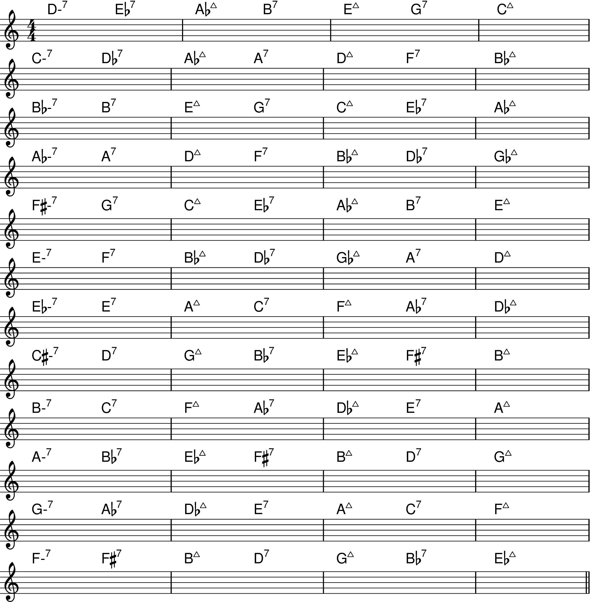
Tonal Centers Moving by Minor 3rds
McCoy Tyner's Locrian V Chord